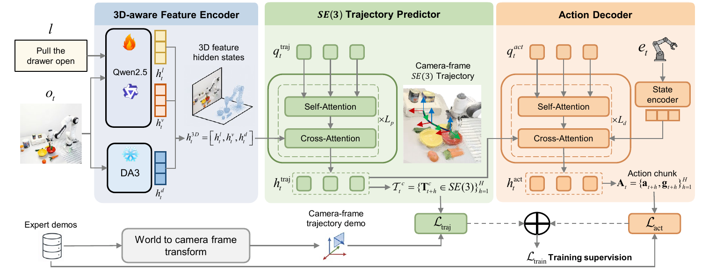
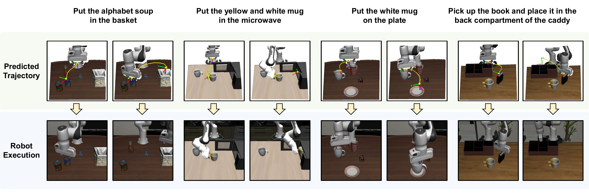
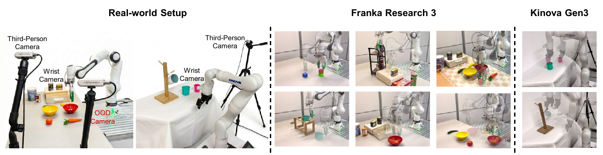

Abstract
Recent vision-language-action (VLA) models and world action models (WAMs) advance robotic manipulation by enriching intermediate representations with auxiliary spatial features or future visual-state prediction. However, these representations largely remain within the observation space and do not share the rigid-body geometry of the action space, forcing the action decoder to implicitly recover this geometry.
OASIS aligns the intermediate representation with the action space through \(SE(3)\) end-effector trajectory prediction. It couples a 3D-aware feature encoder that fuses vision-language and metric-depth features with a camera-frame \(SE(3)\) trajectory predictor. Conditioned on the predictor's pose-supervised hidden states, the action decoder generates action chunks consistent with rigid-body motion.
Across simulation and real-world experiments, OASIS outperforms VLA and WAM baselines in success rate and out-of-distribution generalization.
Method

3D-Aware Feature Encoder
Fuses Qwen2.5-based vision-language features with frozen Depth Anything 3 metric-depth features.
\(SE(3)\) Trajectory Predictor
Predicts a camera-frame \(SE(3)\) end-effector trajectory that provides pose-supervised hidden states for action decoding.
Action Decoder
Cross-attends to the pose-supervised trajectory states and current robot state to produce action chunks.
Results
Simulation Benchmarks
OASIS is trained without large-scale robotic pretraining and evaluated on LIBERO and CALVIN ABC\(\to\)D.
| Method | Intermediate | Pretrain | Spatial | Object | Goal | Long | Avg. |
|---|---|---|---|---|---|---|---|
| SpatialVLA | Spatial features | Yes | 88.2 | 89.9 | 78.6 | 55.5 | 78.1 |
| WorldVLA | Future visual states | No | 85.6 | 89.0 | 82.6 | 59.0 | 79.1 |
| ThinkAct | 2D-supervised features | Yes | 88.3 | 91.4 | 87.1 | 70.9 | 84.4 |
| \(\pi_0\) | Multimodal features | Yes | 96.8 | 98.8 | 95.8 | 85.2 | 94.1 |
| QDepth-VLA | Spatial features | Yes | 97.6 | 96.6 | 95.2 | 90.0 | 94.9 |
| UniVLA | Spatial features | Yes | 96.5 | 96.8 | 95.6 | 92.0 | 95.2 |
| Unified-VLA | Future visual states | Yes | 95.4 | 98.8 | 93.6 | 94.0 | 95.5 |
| OASIS | \(SE(3)\)-supervised features | No | 99.0 | 98.8 | 97.4 | 95.2 | 97.6 |
| Method | Intermediate | Pretrain | 1 | 2 | 3 | 4 | 5 | Avg. |
|---|---|---|---|---|---|---|---|---|
| SuSIE | Future visual states | Yes | 87.0 | 69.0 | 49.0 | 38.0 | 26.0 | 2.69 |
| 3D Diffuser Actor\(^{\dagger}\) | 3D feature | No | 93.8 | 80.3 | 66.2 | 53.3 | 41.2 | 3.35 |
| ReconVLA | Spatial features | Yes | 95.6 | 87.6 | 76.9 | 69.3 | 64.1 | 3.95 |
| Seer-Large | Future visual states | Yes | 96.3 | 91.6 | 86.1 | 80.3 | 74.0 | 4.28 |
| VPP | Future visual states | Yes | 96.5 | 90.9 | 86.6 | 82.0 | 76.9 | 4.33 |
| Unified-VLA | Future visual states | Yes | 98.9 | 94.8 | 89.0 | 82.8 | 75.1 | 4.41 |
| DreamVLA | Future visual states | Yes | 98.2 | 94.6 | 89.5 | 83.4 | 78.1 | 4.44 |
| OASIS | \(SE(3)\)-supervised features | No | 98.1 | 94.9 | 91.7 | 88.9 | 83.3 | 4.57 |

Real-World Performance
OASIS is evaluated on Franka Research 3 and Kinova Gen3 platforms across Goal, Spatial, Long, and OOD settings.

Demos
Simulation
LIBERO Long
CALVIN ABC\(\to\)D
Real-World Tasks
Goal
Spatial
Long Horizon
Out-of-Distribution Real-World Settings
Unseen Backgrounds
Human Interference and Camera Shift
BibTeX
@misc{chen2026oasisobservationactionspacealignment,
title={OASIS: Observation-Action Space Alignment via SE(3) Trajectory Prediction for Robotic Manipulation},
author={Xinzhe Chen and Sihua Ren and Liqi Huang and Haowen Sun and Mingyang Li and Xingyu Chen and Zeyang Liu and Xuguang Lan},
year={2026},
eprint={2605.25829},
archivePrefix={arXiv},
primaryClass={cs.RO},
url={https://arxiv.org/abs/2605.25829},
}